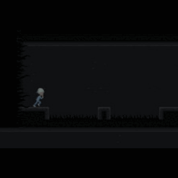
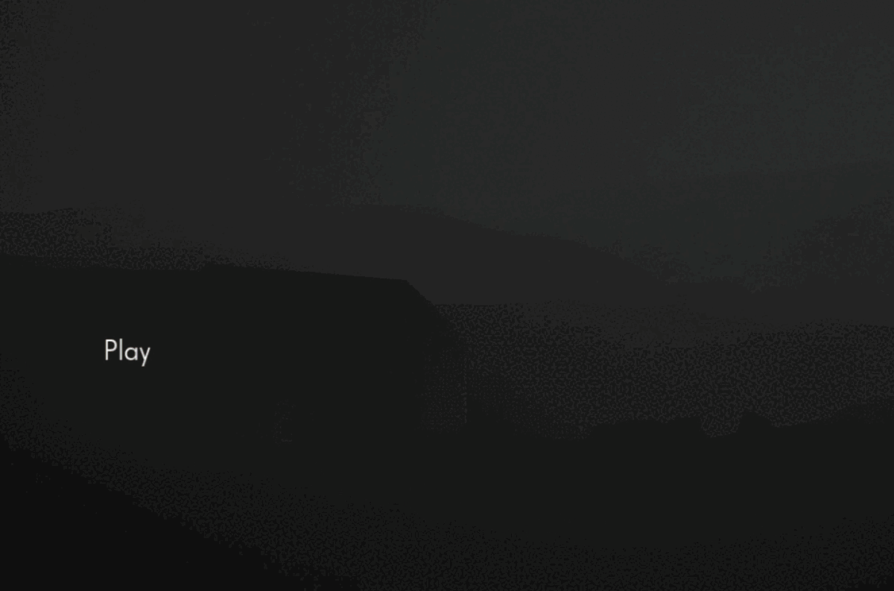
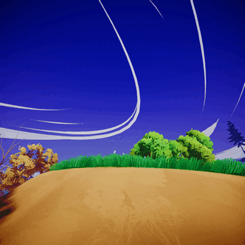
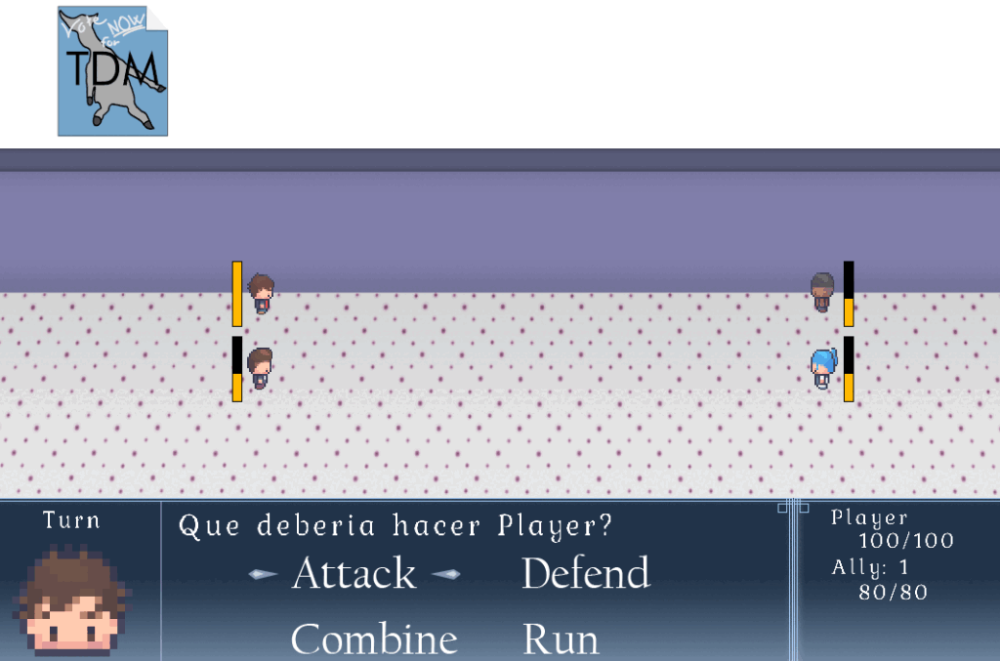

Game Jam
Lights Out
In this game presented to the Indie Dev Game Jam, I was in charge of programming the game, fixing bugs and play testing.
Play the Game →

University Project
Final Degree Work
A first person walking simulator created in Unreal Engine 5.1 as my university final project, exploring environmental narrative in videogames.
Watch the Trailer →

Personal Project
Summer Game
A small and quiet videogame developed during a week in summer vacation.
Download the Game →
VR Development
Màscares & Marquesos
An online virtual reality game developed for the Generalitat de Catalunya. 4 months of development, optimized for Quest 2.
Visit GitHub →

Custom Engine
Caronte Mandate
A classic RPG created for a second year course using a proprietary engine built by students.
Test the Game →